钟苇珊
Weishan Zhong
9年语言培训教学与学科单项管理经验，宾夕法尼亚大学教育学硕士（学习科学与技术方向，2026年7月毕业）。主导托福听力及词汇单项体系建设，自主研发AI跟读训练平台 ShadowingLab，致力于将二语习得研究转化为可落地的教学实践。
教育背景与职业历程
宾夕法尼亚大学
教育学硕士，学习科学与技术方向 Learning Sciences and Technologies。GPA 3.93。核心课程：语言测评、学习环境设计、实验语音学、教育研究编程基础。
托福听力学科带头人
广州分校托福听力学科带头人，主导学科体系建设，带领教研组研发系列教学材料，组织30+场教研活动，实现组内教师零投诉率。
新航道国际教育集团
主讲：托福听力、托福入门词汇、SAT词填、GRE词填。托福听力内训师。广州分校托福耶鲁工作室听力主讲。累计服务学员逾千名，带出上百名高分或满分学员。
Global IELTS 环球雅思教育机构
教学助理实习生，协助课程材料准备与学员作业批改反馈。
广东工业大学华立学院
英语专业（翻译与口译方向）文学学士。英语专业八级。
资格证书
教学成果展示
学员高分出分成果与好评反馈。点击卡片查看详情。
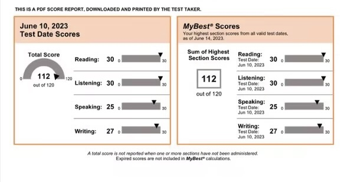
教研成果展示
担任学科带头人期间独立研发的系列教学材料。点击卡片查看详情与内页预览。
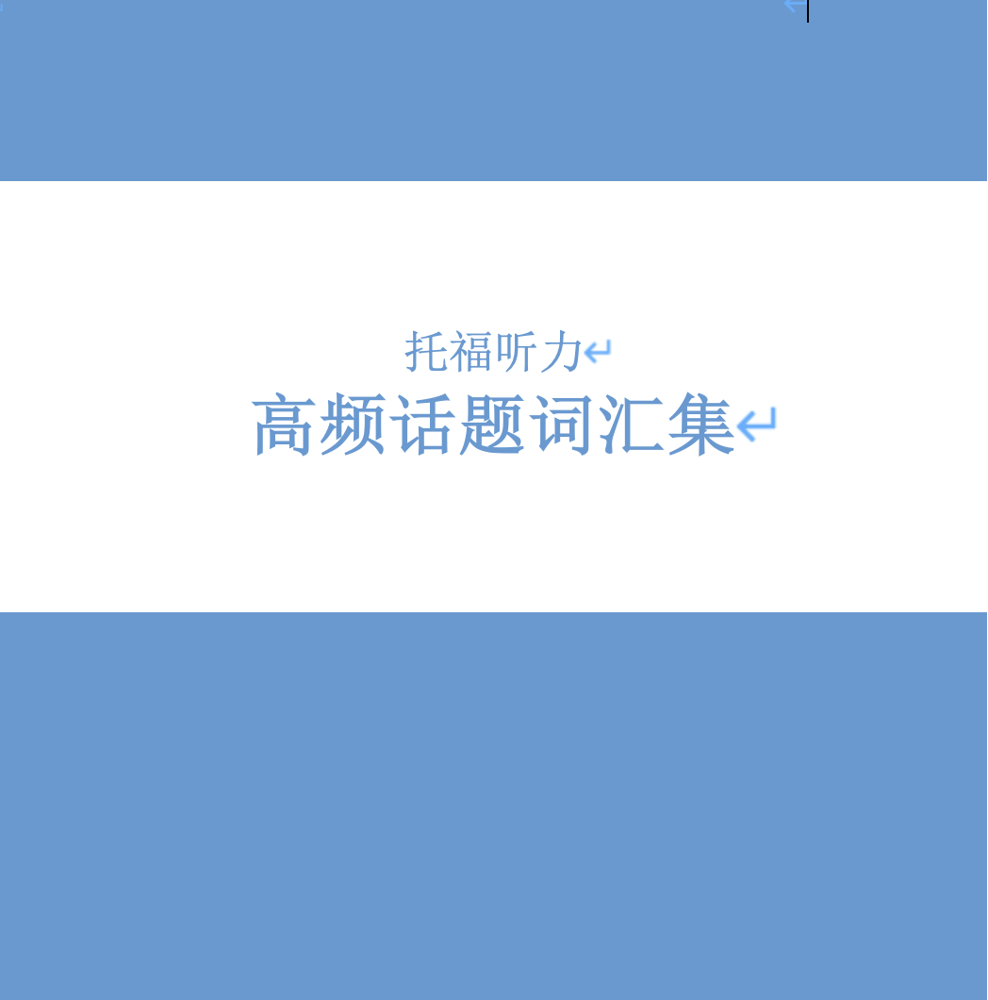
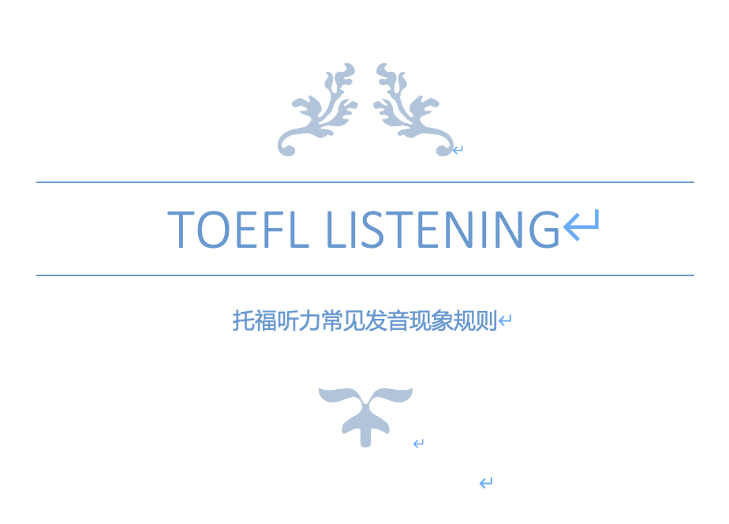
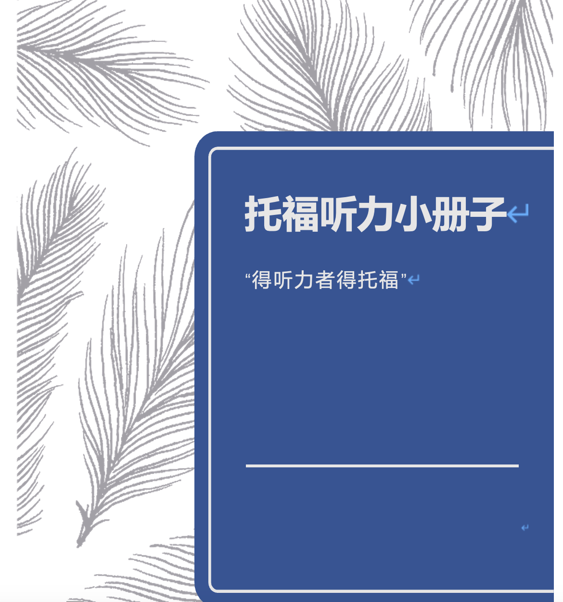
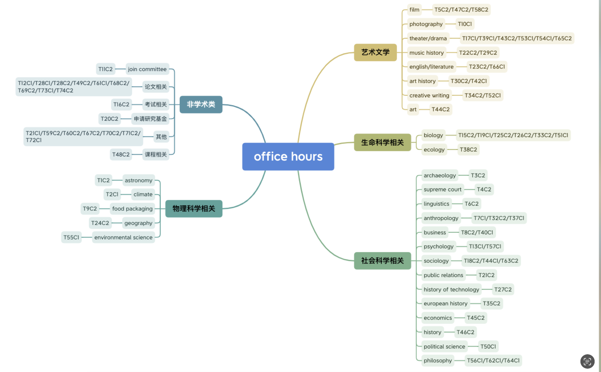
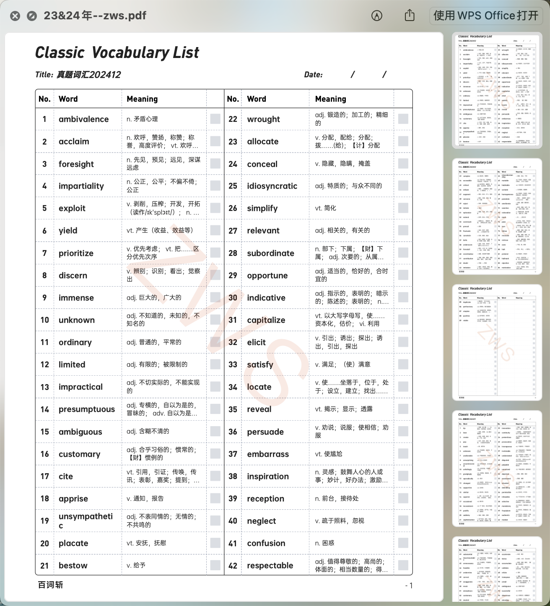
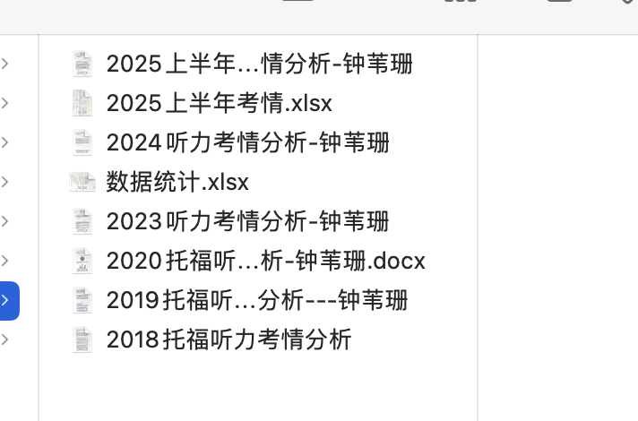
教研活动
主题教研、考情分析直播及教师培训等活动。点击图片查看详情。
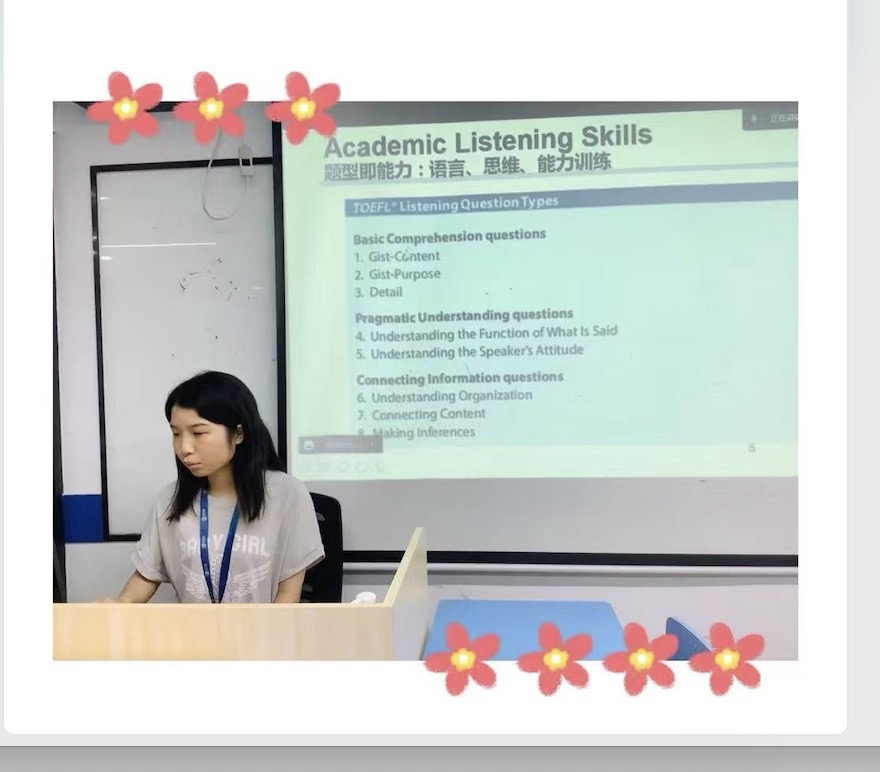
研究生阶段成果
Capstone 项目
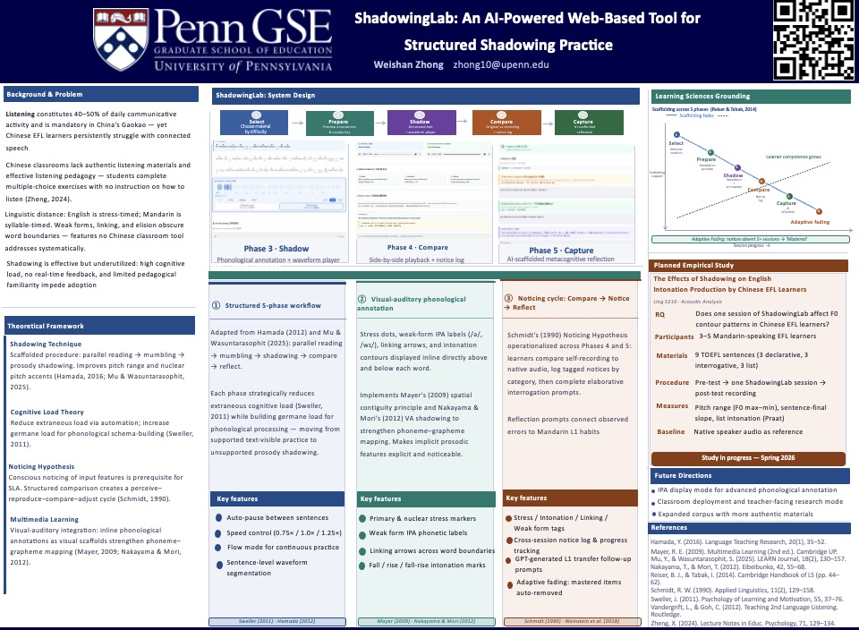
ShadowingLab
AI跟读训练学习平台
面向中国EFL学习者的结构化跟读训练工具。基于五阶段跟读框架，融合视觉-听觉语音标注、AI辅助元认知反思与自适应消退机制，解决中国课堂中听力教学缺乏真实材料与即时反馈的核心痛点。
→ 访问平台演示其他课程研究项目
点击卡片查看项目介绍与成果图片。
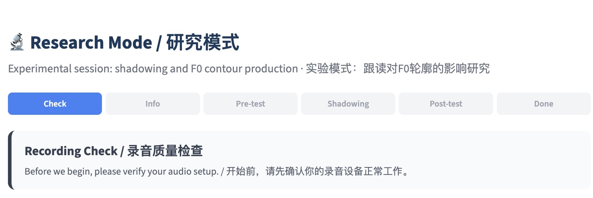
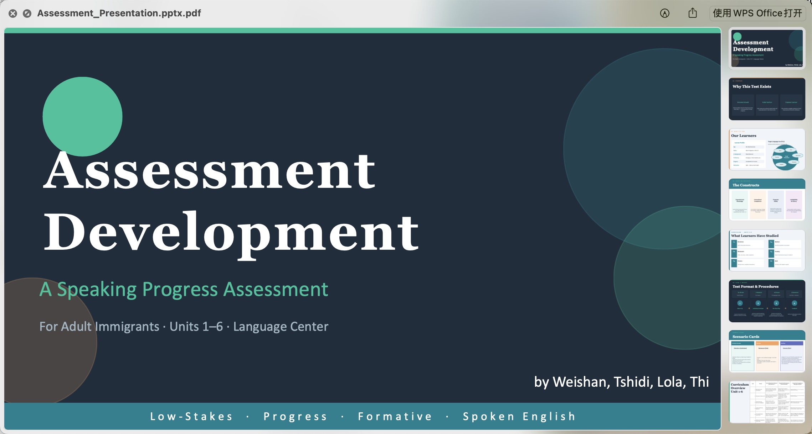
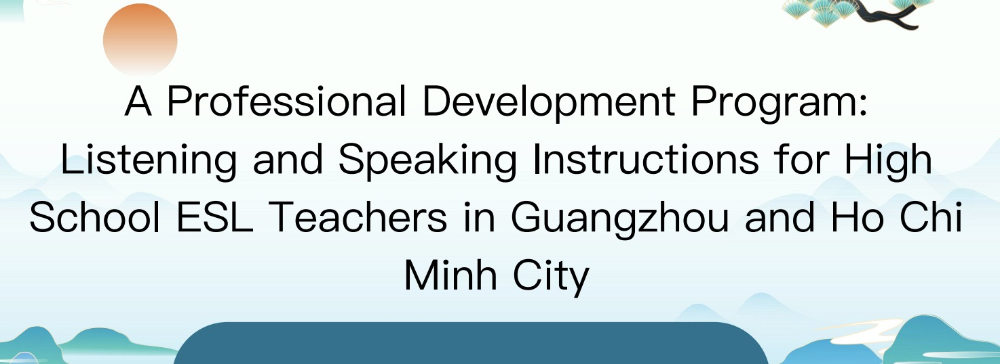
联系方式
期待与志同道合的教育团队合作，探索语言教学的更多可能。